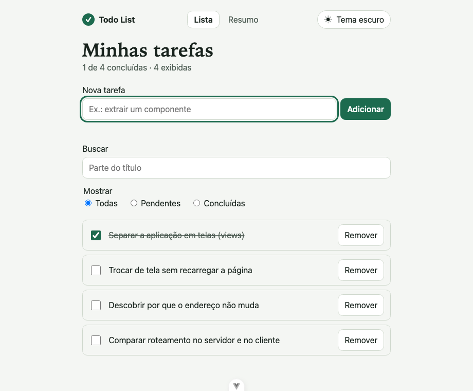
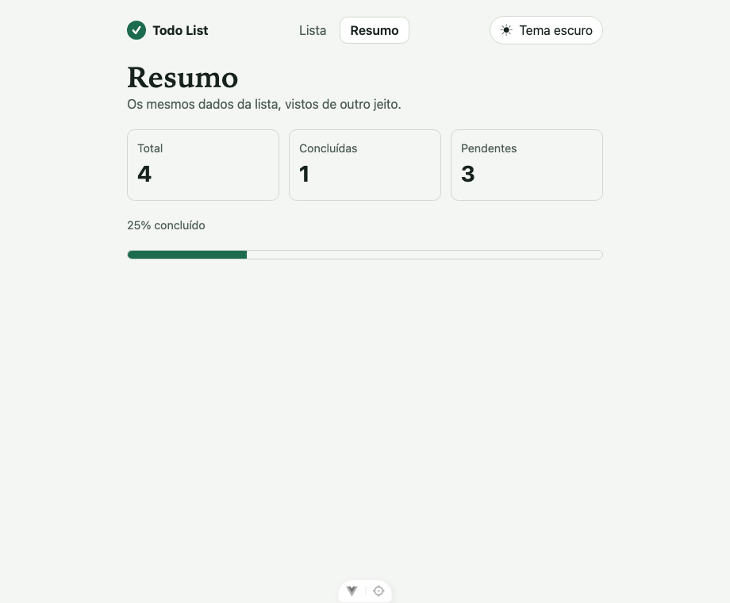

Duas telas, um endereço só
A Todo List ganha uma segunda tela: o Resumo. Hoje a troca é feita à mão, com um ref e um v-if — exatamente como a etapa 06 desenhou a lista à mão antes de conhecer o Vue. Funciona. E é por funcionar que o limite fica visível.
| Critério | Evidência |
|---|---|
| Duas telas | Lista e Resumo alternam sem recarregar |
| Os dados sobrevivem | Criar uma tarefa, ir ao Resumo e voltar: ela continua lá |
| O limite | Três coisas que quebram sem roteador, ditas de cor |
Roteamento no servidor × roteamento no cliente
| No servidor | No cliente (SPA) | |
|---|---|---|
| Quem decide | O servidor, a cada pedido | O JavaScript, já carregado |
| O que chega | Uma página HTML nova | Nada: a página já está aqui |
| A tela | Pisca e recarrega | Troca na hora |
| Primeira visita | Rápida | Mais lenta (baixa o app inteiro) |
| Endereço | Sempre certo, de graça | Só se alguém cuidar disso |
Um portal como o portal.fgv.br/graduacao é roteamento no servidor: outro endereço, outro pedido, outra resposta. Uma SPA carrega um documento só e troca o conteúdo por dentro.
const tela = ref('lista')
<button @click="tela = 'lista'">Lista</button>
<button @click="tela = 'sobre'">Resumo</button>
<ListaView v-if="tela === 'lista'" … />
<SobreView v-else … />| Pasta | Papel |
|---|---|
components/ | Peças reaproveitáveis: TarefaItem, PainelCartao |
views/ | Telas inteiras, uma por endereço: ListaView, SobreView |
Mesma tecnologia nas duas pastas — um .vue é um .vue. O que muda é o papel, e a pasta serve para deixar isso óbvio para quem lê.
As duas telas funcionando — e o que não funciona

Endereço: http://localhost:5173/

Endereço: http://localhost:5173/ — o mesmo.
| Ação | O que acontece |
|---|---|
| Olhar o endereço | Não muda ao trocar de tela |
| F5 no Resumo | Volta para a Lista |
| Botão Voltar | Sai da aplicação |
| Enviar o link do Resumo | Não existe link para enviar |
Crie uma tarefa na Lista, vá ao Resumo e volte: ela continua lá. O v-if destrói a view, mas os dados moram no App — é a lição da etapa 13 (quem é dono do estado) pagando dividendo.
Playground: a view destruída, os dados intactos
ObservePor que os dados sobrevivem à troca de tela, mas a escolha da tela não sobrevive ao F5?
Prática: a tela SobreView
- Ponto de partida
- A sua cópia da etapa 14. A pasta da etapa 15 já traz a solução.
- 1
- Crie
src/views/e mova o painel inteiro doApp.vueparaListaView.vue, recebendo o que precisa por props ev-model. - 2
- Crie
SobreView.vue: total, concluídas, pendentes e a barra de progresso (role="progressbar"comaria-valuenow). - 3
- No
App, oreftelae os dois botões. - Evidência
- Concluir uma tarefa na Lista muda o percentual no Resumo.
Dica 1
O percentual é derivado: computed, nunca ref. Cuidado com a lista vazia — divisão por zero.
Dica 2
A barra é uma div dentro de outra, com :style="{ width: `${percentual}%` }".
Mostrar solução (após a tentativa)
const pendentes = computed(() => props.tarefas.length - props.concluidas)
const percentual = computed(() => {
if (props.tarefas.length === 0) return 0
return Math.round((props.concluidas / props.tarefas.length) * 100)
})<div class="barra" role="progressbar" :aria-valuenow="percentual"
aria-valuemin="0" aria-valuemax="100"
aria-label="Percentual de tarefas concluídas">
<div class="barra-cheia" :style="{ width: `${percentual}%` }"></div>
</div>O endereço é estado — e é o único que sobrevive
| Onde o estado mora | Sobrevive ao F5? | Vai num link? |
|---|---|---|
ref (memória da aba) | Não | Não |
localStorage (etapa 12) | Sim | Não |
| Endereço | Sim | Sim |
O endereço é o único lugar de estado que você pode copiar e colar num WhatsApp. É isso que um roteador compra para vocês.
O que merece ir para o endereço, numa aplicação de verdade:
- Em que tela estou —
/resumo - Qual item estou vendo —
/tarefa/3(etapa 17) - Filtros e busca —
/?situacao=pendentes - Página da listagem —
/?pagina=2
O que não vai: senha, token, nada que não possa aparecer no histórico do navegador, num print ou no registro do servidor.
Investigação: para onde o botão Voltar leva?
- Abra a aplicação e clique em Resumo.
- Aperte o botão Voltar do navegador.
- Olhe o endereço antes e depois.
Sintoma: o Voltar não volta para a Lista — ele sai da aplicação, para a página que você estava antes (ou para a aba em branco). Nenhum erro aparece.
> history.length
2
// clicar em Resumo, depois em Lista
> history.length
2 ← não mexeu
// na etapa 16, com roteador, o mesmo teste:
// 2 → 3 → 4 (uma entrada por navegação)O número de partida varia conforme o que você abriu antes na aba; o que importa é se ele sobe.
Dica
O navegador só guarda no histórico aquilo que ele viu acontecer. Trocar um ref é coisa de dentro do JavaScript: o navegador não ficou sabendo.
Mostrar explicação
Clicar nas abas não cria entradas no histórico, porque nenhuma navegação aconteceu — só uma variável mudou. Para o navegador, a sessão inteira é uma página só. Quem cria essas entradas é a History API, e é exatamente o que o Vue Router usa na etapa 16.
Usuário não lê documentação: ele aperta Voltar. Uma aplicação que perde o trabalho dele nesse botão é uma aplicação quebrada, mesmo que nenhum erro apareça no Console.
Pesquisar: SPA, History API e o que perguntar à IA
Tenho uma aplicação Vue 3 com <script setup> que troca de tela com
um ref e v-if. O endereço do navegador não muda, o F5 volta para a
primeira tela e o botão Voltar sai da aplicação.
Explique, citando a documentação oficial:
1. que mecanismo do navegador faz o endereço mudar sem recarregar;
2. o que eu ganho e o que eu perco ao adotar um roteador;
3. um caso em que NÃO vale a pena usar roteador.
Não escreva código ainda. Cite as páginas que usou.| A resposta deve dizer | Sinal de resposta ruim |
|---|---|
History API (pushState, popstate) | Só fala de window.location, que recarrega |
| Ganha: link, F5, Voltar, favoritos | Só cita “organização do código” |
| Perde: mais um pacote, configuração do servidor | Diz que não há custo nenhum |
| Não vale: uma tela só, ou um widget dentro de outra página | “Sempre use roteador” |
Onde conferir
Verificação sem IA
- Cite três coisas que deixam de funcionar quando se troca de tela sem roteador.
- Criei uma tarefa, fui ao Resumo e voltei: a tarefa continua lá. Por quê?
- Qual a diferença entre um arquivo em
components/e um emviews/?